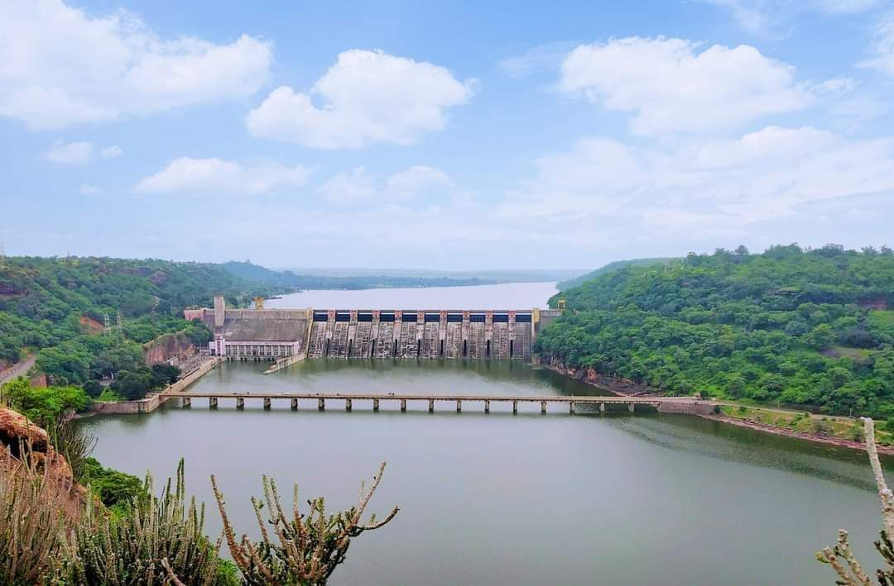
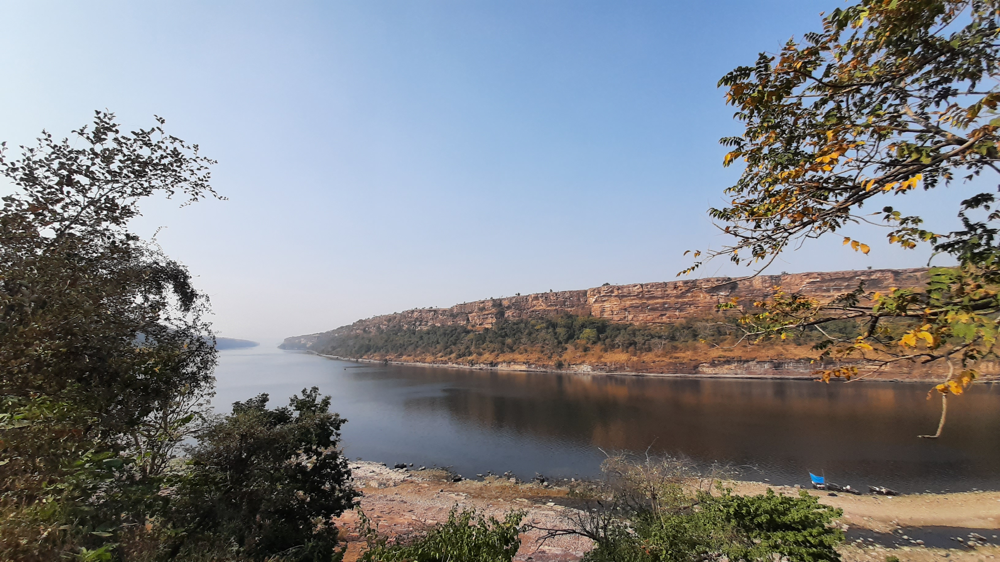
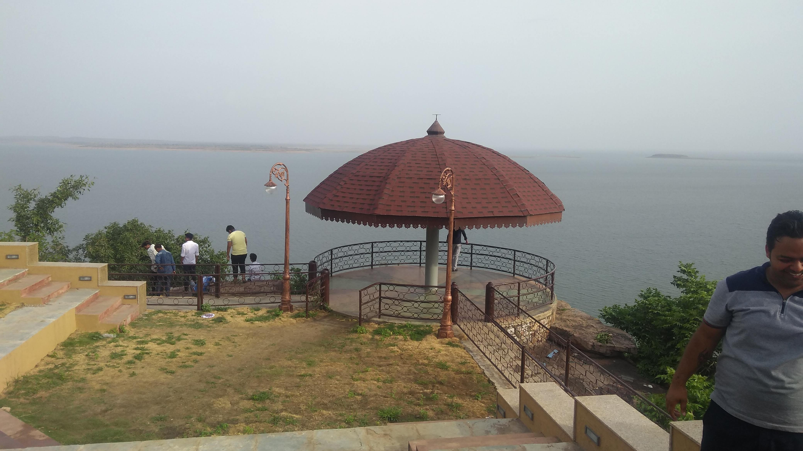
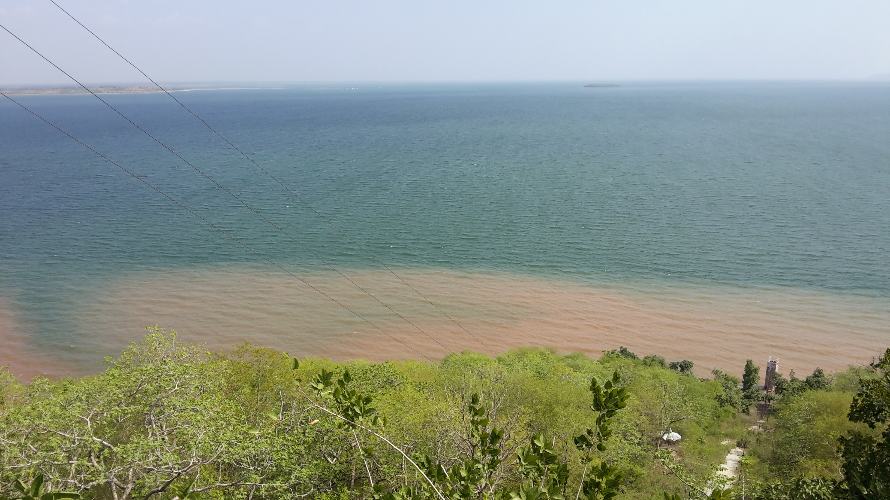
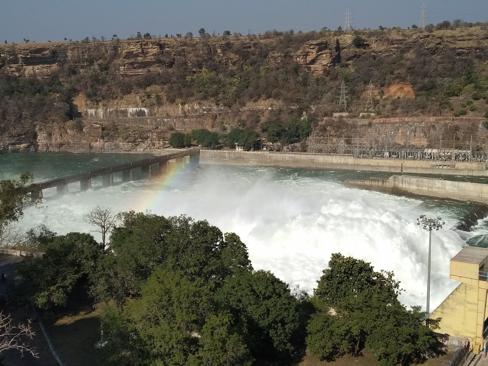

Gandhisagar Dam is situated at a distance of 168 Km. fromthe District headquarter. The Dam is constructed on theChambal River.
The Gandhi Sagar Dam is one of the four major dams built on India's Chambal River. The dam is located in the Mandsaur,districts of the state of Madhya Pradesh. It is a masonry gravity dam, standing 62.17 metres (204.0 ft) high, with a gross storage capacity of 7.322 billion cubic metres from a catchment area of 22,584 km2 (8,720 sq mi). The dam's foundation stone was laid by Prime Minister of India Pandit Jawaharlal Nehru on 7 March 1954, and construction of the main dam was done by leading contractor Dwarka Das Agrawal & Associatesand was completed in 1960. Additional dam structures were completed downstream in the 1970s.
The dam sports a 115-MW hydroelectric power station at its toe, with five 23-MW generating units each providing a total energy generation of about 564 GWh. The water released after power generation is used for the irrigation of 427,000 hectares (1,060,000 acres) by the Kota Barrage, which is located 104 kilometres (65 mi) downstream of the dam, near the city of Kota in the state of Rajasthan.
It attracts many migratory and non-migratory birds throughout the year. The International Bird Life Agency (IBA) has qualified the reservoir under "A4iii" criteria, as the congregation of water birds is reported to exceed 20,000 at some points.
The Chambal River (known in ancient times as the Chamranyavati River) raises in the Vindhya Range at an elevation of 853 metres (2,799 ft), 15 kilometres (9.3 mi) west-southwest of the town of Mhow, near Indore. It flows north-northeast through Madhya Pradesh, runs for a time through Rajasthan, then forms the boundary between Rajasthan and Madhya Pradesh before turning southeast to join the Yamuna River in the state of Uttar Pradesh. Its total length from its source to its confluence with the Yamuna River is 900 kilometres (560 mi).
The Chambal and its tributaries drain the Malwa region of north western Madhya Pradesh, while its tributary, the Banas, which rises in the Aravalli Range, drains southeastern Rajasthan. At its confluence with the Yamuna, the Chambal joins four other rivers – the Yamuna, Kwari, Sind, and Pahuj –at Pachnada near Bhareh in Uttar Pradesh, at the border of the Bhind and Etawah districts. The river is drained by a rain-fed catchment area with an average annual rainfall of 860 millimetres (34 in), a temperature range of between 2 °C(36 °F) and 40 °C (104 °F), and a relative humidity ranging from 30% to 90%.
The Chambal River Valley Development marked one of the landmark actions of the First Five-Year Plan launched by the Government of India in 1951, after India attained independence in August 1947. The Chambal River had not until then been used for any major developmental works, and was proposed to be developed under a joint initiative of the state governments of Madhya Pradesh and Rajasthan. The three-stage proposal, drawn up in 1953, called for three dams to provide hydroelectric power generation, and a downstream barrage to use stored waters released from the upstream dams for irrigation. The river's drop of 625metres (2,051 ft) between its source in Mhow and the city of Kota, which marks the exit of the river from its gorge section into the plains of Rajasthan, was seen as having great hydroelectric potential.
The first stage of the development involved construction of the Gandhi Sagar Dam to a height of a 62.17 metres (204.0 ft) as a storage dam to store 7,32,20,00,000 cubic metres in MadhyaPradesh and use the stored water for hydroelectric powergeneration, followed by irrigation from the Kota Barrage in Rajasthan, 104 kilometres (65 mi) downstream of the dam. Powergeneration at Gandhi Sagar Dam was through a powerhouse at the toe of the dam, with a total installed capacity of 115 MW (dividedinto five units of 23 MW). The Kota Barrage, an earth and masonry structure 37.34 metres (122.5 ft) in height, was built to provide irrigation through a canal system, with two main canals on the right and left banks. Construction of both projects began in 1953–54; both began functioning in 1960. The water received at the Kota Barrage is shared equally between Madhya Pradesh and Rajasthan for irrigation.
The second stage of development involved the use of the water released from the Gandhi Sagar Dam through another dam structure, the Rana Pratap Sagar Dam, located 48 kilometres (30 mi) downstream of the Gandhi Sagar at Rawatbhata in the Chittorgarh District of Rajasthan. Additional storage at this dam provides an increase in irrigation benefits from the Kota Barrage, increasing its area of irrigation from 445,000 hectares (1,100,000 acres) to 567,000 hectares (1,400,000 acres). In addition, a powerhouse at the toe of the dam provides an additional hydroelectric power generation capacity of 172 MW from four turbogenerators, of 43 MW capacity each. The second stage was completed in 1970. The power generated at the Rana Pratap Sagar Dam is shared equally with Madhya Pradesh, as the Gandhi Sagar Dam provides the stored waters for use at this dam.
The third and final stage of development envisaged an intermediate dam between the Rana Pratap Sagar Dam and the Kota Barrage, called the Jawahar Sagar Dam. This dam is a concrete gravity dam, 45 metres(148 ft) high, located approximately 23 kilometres (14 mi) upstream of Kota Barrage to its southwest, and provides a hydroelectric power generation capacity of 99 MW, with three generator units of 33 MW capacity each. This project was commissioned in 1972.
Gandhi Sagar Dam is a masonry gravity dam with a height of 62.17 metres (204.0 ft) and a length of 514 metres (1,686 ft). The reservoir has a gross storage capacity of 7.32 billion cubic metres,with a live storage of 6.79 billion cubic metres corresponding to Full Reservoir Level (FRL) at 400 metres (1,300 ft). The spill way of the dam is designed for a discharge of 21,238 cubic metres per second. There are 10 gated spillway spans to pass the designed flood discharge. In addition, 9 river sluices have also been provided, but these have not been functional.
The hydroelectric power station is located at the toe of the dam on the right bank. The total flow through the five turbines is 311.15 m3/s. The power station has an installation of 142 MW with five turbines of 23MW and one unit of 27 MW capacity. The power station is 65 metres (213 ft) long and 56 feet (17 m)wide. Power is supplied first to the local district and then to other regions of Madhya Pradesh and Rajasthan. The Gandhi Sagar Dam and Power Station were built at a total cost of about Rs. 2.3 billion.
The reservoir created by the dam is the third largest in India (after the Indirasagar Reservoir and Hirakud Reservoir), with a total area of 723 km2 (279 sq mi). The catchment area of the Chambal River from the Vindhyachal ranges to the south and Aravalli to the northeast, covering a drainage area of 22,584 km2 (8,720 sq mi); important tributaries that discharge into the Chambal upstream of this reservoir include the Shipra, Chhoti, Kalisindh, Ansar, and Rupniya on the eastern side, and the Tilsoi, Edar, Retum and Shivnain the west. The maximum length and width of the reservoir are 68 kilometres (42 mi) and 26 kilometres(16 mi), respectively. The Gandhi Sagar Wildlife Sanctuary, which has an area of 36,700 hectares (91,000acres), is shared by the Mandsaur and Neemuch districts, in the catchment area of the Gandhi Sagar reservoir. The sanctuary's forested area was once a hunting area of the Holkar royal family of Indore. The reservoir is under the control of the irrigation and fisheries departments of the Government of MadhyaPradesh, and is mostly used for fisheries development also.





